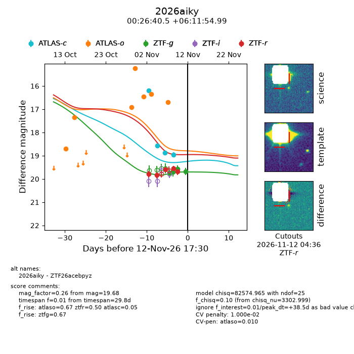
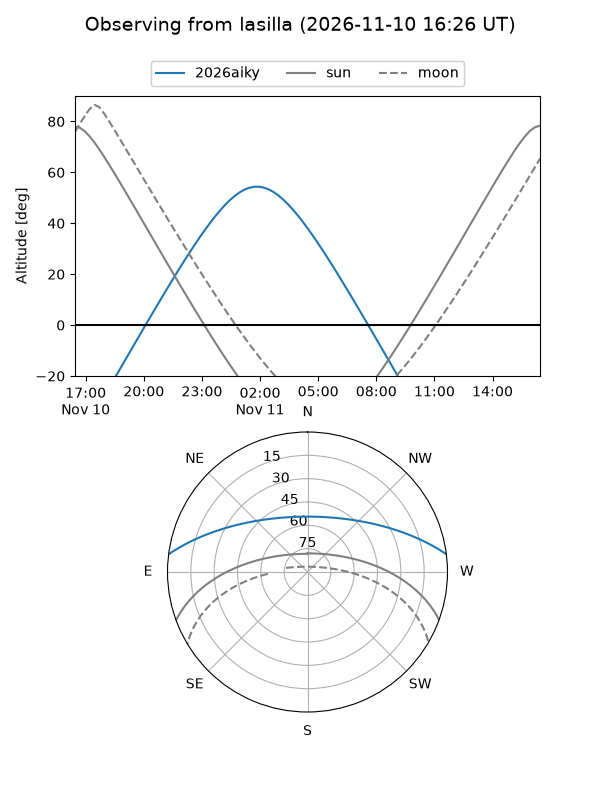
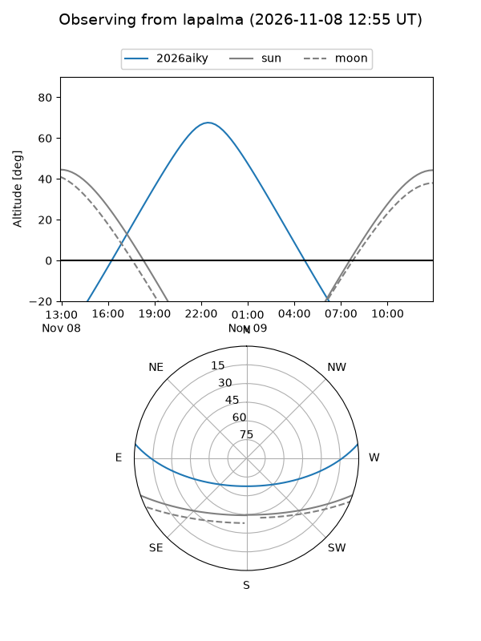
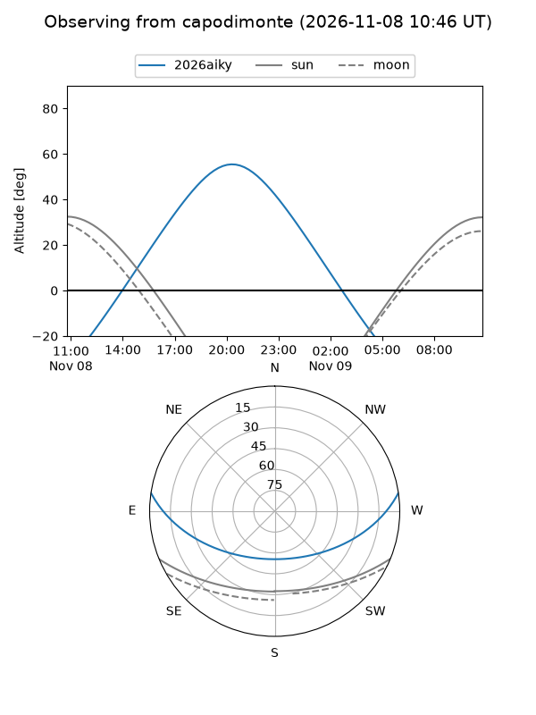
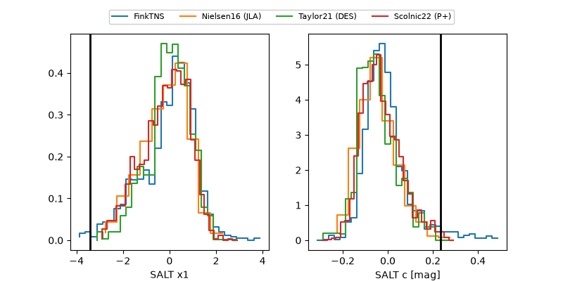

2026aiky
Target 2026aiky at 2026-11-12 17:35
Aliases and brokers:
FINK-ZTF: ztf.fink-portal.org/ZTF26acebpyz
Lasair-ZTF: lasair-ztf.lsst.ac.uk/objects/ZTF26acebpyz
ALeRCE-ZTF: alerce.online/object/ZTF26acebpyz
YSE-PZ: ziggy.ucolick.org/yse/transient_detail/2026aiky
TNS name: wis-tns.org/object/2026aiky
Direct TNS query: direct search
alt names
ZTF26acebpyz (ztf,fink_ztf)
2026aiky (tns,yse)
Coordinates:
equatorial (ra, dec) = 6.6687,+6.19861
equatorial (HMS+DMS) = 00:26:40.48,+06:11:54.99
galactic (l, b) = (111.8383,-56.13883)
Flags:
likely cv: !!
CV pen: 0.01
peak dt: +38.5
Photometry:
last atlasc=18.95, atlaso=16.71, ztfg=19.68, ztfr=19.68
4 atlasc, 7 atlaso, 4 ztfg, 5 ztfr detections
Lightcurve

Visibility



Additional plots
